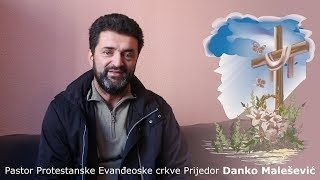

Lokacija naše kancelarije
Hleb Života

Branislava Nušića 40
79101 Prijedor
Kontakt broj/e-mail
+387 66 337 379
 Facebook stranica
Facebook stranica
+387 66 911 016
Danko Malešević
U Božićima kod Prijedora djeluje Centar za rehabilitaciju ovisnika "Novi početak". Iza njegovog osnivanja stoji
Hrišćanska humanitrna organizacija "Hleb života". Kapacitet centra je 30 tak osoba.
Boravak se ne naplaćuje!
Oni koji smatraju da im je boravak u komuni šansa za promjenu u životu mogu da se jave na broj telefona
ili da nam pošalju e-mail:
bolpd@teol.net
Novi Početak © 2019